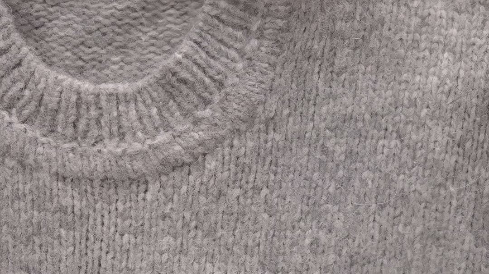
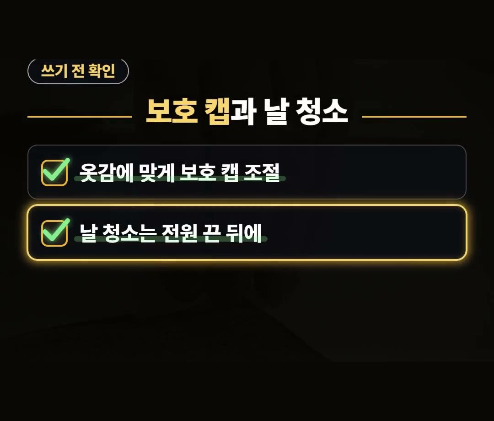
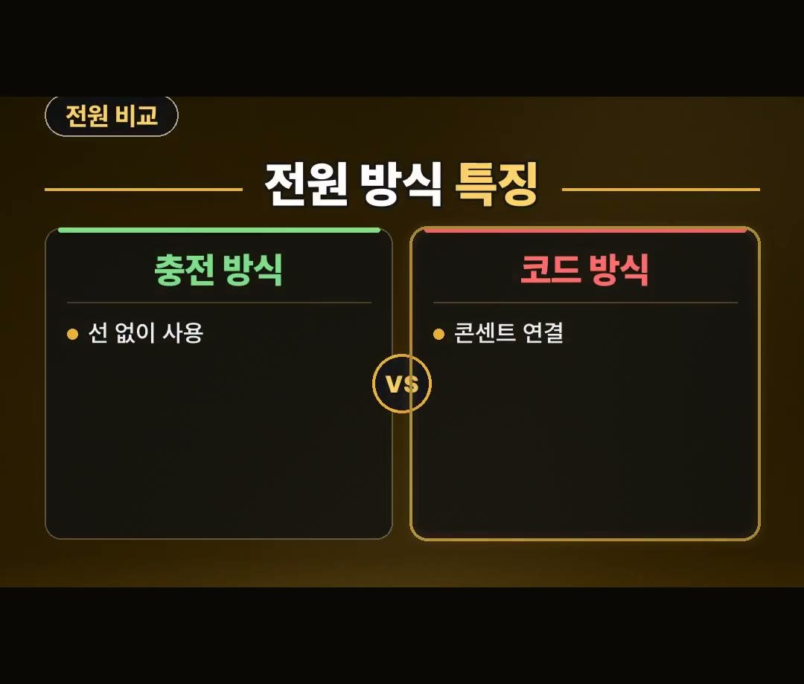

보풀제거기 추천 고를 때 전원 방식과 보호 캡 확인하는 법
※ 이 글에는 제휴 링크가 포함되어 있으며, 링크를 통해 구매하시면 일정 수수료를 받을 수 있습니다. (가격은 같습니다)
※ 이 포스팅은 쿠팡 파트너스 활동의 일환으로, 이에 따른 일정액의 수수료를 제공받습니다.
※ 이 콘텐츠는 토스쇼핑 쉐어링크 활동의 일환으로, 링크를 통한 구매가 발생하면 일정 수수료를 지급받습니다.

아끼는 니트에 보풀이 생기면 무작정 뜯어내기 쉽습니다.
보풀제거기를 쓸 때도 날 높이가 맞지 않으면 옷감까지 잘려 나갈 수 있습니다.
옷감 표면을 안전하게 관리하기 위해 어떠한 기준을 보고 선택해야 하는지 정리해 보았습니다.
보풀제거기 추천 상품을 알아볼 때는 사용 빈도와 전원 방식, 그리고 날 높이 간격 조절 캡 유무를 꼭 확인해야 돼요.
옷이 많고 겨울 니트를 자주 입는 집이라면 하나쯤 둘 만하지만, 옷이 적고 가끔 쓰는 집이라면 굳이 사지 않아도 됩니다! 💡
보풀제거기 작동 원리와 주의할 점
보풀제거기는 내부에 들어 있는 칼날이 돌면서 옷 표면에 올라온 보풀을 자르는 도구입니다.
아끼는 니트에 보풀이 생겼을 때 무작정 손으로 뜯어내기 쉽지만, 잘못 다루면 원단이 손상될 수 있습니다.

특히 날 높이가 맞지 않으면 보풀뿐만 아니라 옷감까지 잘려 나갈 수 있거든요.
따라서 작동 시 옷감에 맞게 보호 캡을 조절해서 쓰는 과정이 필요합니다.

날 청소와 보호 캡 조절 요령
기기를 안전하게 쓰기 위해서는 쓰기 전 확인 사항을 체크해야 합니다.
- 옷감에 맞게 보호 캡 조절하기
- 날 청소는 전원을 끈 뒤에 진행하기
날을 청소할 때는 안전을 위해 반드시 전원부터 끄고 작업해야 합니다.
얇은 옷을 자주 다루는 편이라면 날 높이를 맞춰 주는 간격 조절 캡 유무가 중요합니다.

보풀제거기 추천 전원 방식 비교
살 때 전원 방식이 충전식인지 코드식인지 확인해야 합니다.
보풀제거기 추천 목록을 볼 때 전원 구조에 따라 사용 환경이 달라집니다.
- 충전 방식: 선 없이 사용 가능
- 코드 방식: 콘센트를 연결해서 사용
선 없이 쓰고 싶다면 충전 방식을, 콘센트에 직접 연결해 쓰고 싶다면 코드 방식을 상황에 맞춰 고르면 됩니다.
한 상품 설명에 따르면 선 없이 쓰는 무선 방식이고 대용량 보풀 통이 달린 제품도 있다고 합니다.
살 때 표시 항목과 오래 쓰는 기준
제품을 오래 쓰려면 포장에 적힌 표기 사항을 살펴봐야 합니다.
- 교체 날 구성 여부
- 보풀 통 용량
오래 쓰기 위해서는 구성품에 교체 날이 들어 있는지 상품 표시를 확인하는 것이 좋습니다.
또한 보풀 찌꺼기를 바로 비울 수 있는 보풀 통 크기도 중요한 요소입니다.
정리
- 옷이 적고 가끔 쓰는 집은 굳이 사지 않아도 되고, 겨울 니트가 많다면 둘 만합니다.
- 얇은 옷을 다룰 때는 간격 조절 캡 유무를 보고, 날 청소는 전원을 끄고 해야 합니다.
- 오래 쓰려면 교체 날 구성과 보풀 통 용량을 확인하고 사야 합니다.
제품 링크는 아래에 모아 두었어요.
📌 2026년 10월 기준 정보예요. 가격은 시기에 따라 달라질 수 있어요.
사진·영상: Pexels (Monstera Production, Nova lv, Tima Miroshnichenko)